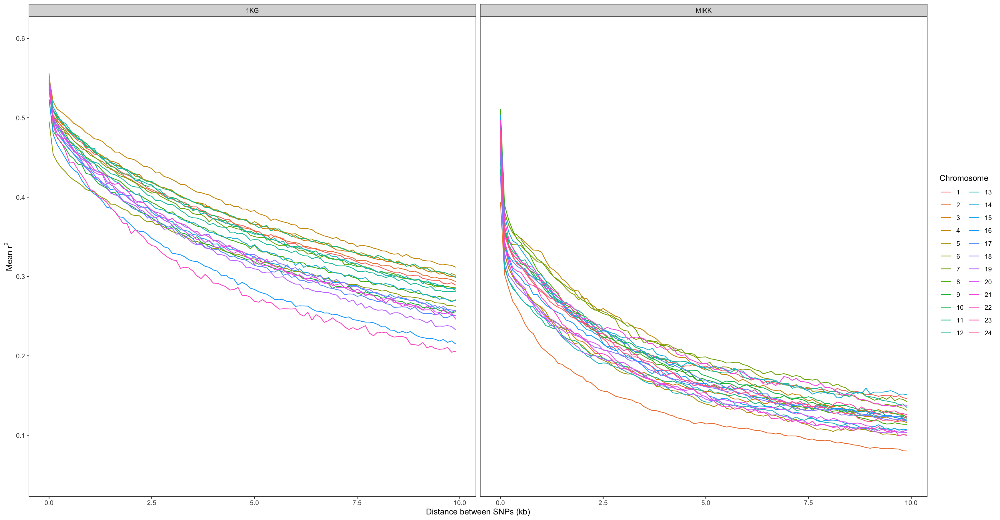

5.4.1 Main
5.4.1.1 Read in and process data
# Setup
require(here)
source(here("mikk_genome", "code", "scripts", "setup.R"))
# Create function to read in data and bind into single DF
read_n_bind = function(data_path_pref, dataset){
# Set path
path = paste(data_path_pref, dataset, sep = "")
# Read in data
data_files <- list.files(path,
full.names = T)
data_files_trunc <- list.files(path)
data_files_trunc <- gsub(".txt", "", data_files_trunc)
data_list <- lapply(data_files, function(data_file){
df <- read.delim(data_file,
sep = "\t",
header = T)
return(df)
})
names(data_list) <- as.integer(data_files_trunc)
# reorder
data_list <- data_list[order(as.integer(names(data_list)))]
# bind into DF
out_df = dplyr::bind_rows(data_list, .id = "chr")
out_df$chr <- factor(out_df$chr, levels = seq(1, 24))
# get kb measure
out_df$bin_bdr_kb <- out_df$bin_bdr / 1000
return(out_df)
}
# Run over both datasets
datasets = c("mikk", "1kg")
final_lst = lapply(datasets, function(x) read_n_bind("ld/20200727_mean_r2_10kb-lim_", x))
names(final_lst) = datasets
# Combine into single DF
r2_final_df <- dplyr::bind_rows(final_lst, .id = "dataset")# Write table to repo
write.table(r2_final_df,
file = here("mikk_genome", "data", "20200803_r2_10kb-lim.csv"),
quote = F, sep = ",", row.names = F, col.names = T)5.4.1.2 Plot
# Tidy data for final plot
r2_final_df$chr = factor(r2_final_df$chr, levels = seq(1, 24))
r2_final_df$dataset = toupper(r2_final_df$dataset)
# Plot
r2_plot_main = r2_final_df %>% ggplot() +
geom_line(aes(bin_bdr_kb, mean, colour = chr)) +
theme_bw() +
xlab("Distance between SNPs (kb)") +
ylab(bquote(.("Mean r")^2)) +
facet_wrap(~dataset, nrow = 1, ncol = 2) +
theme(panel.grid = element_blank()) +
labs(colour = "Chromosome") +
scale_y_continuous(breaks = c(0.1, 0.2, 0.3, 0.4, 0.5, 0.6),
limits = c(0.05, 0.6))
r2_plot_main
# Save plot to repo
ggsave(filename = paste("20200803_mean-r2_10kb-lim_1KGvMIKK_single", ".png", sep = ""),
plot = r2_plot_main,
device = "png",
path = here("mikk_genome", "plots"),
width = 25,
height = 13,
units = "cm",
dpi = 500)